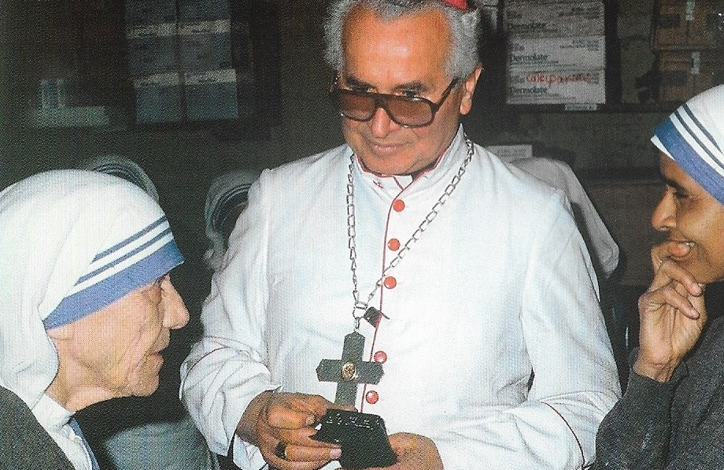
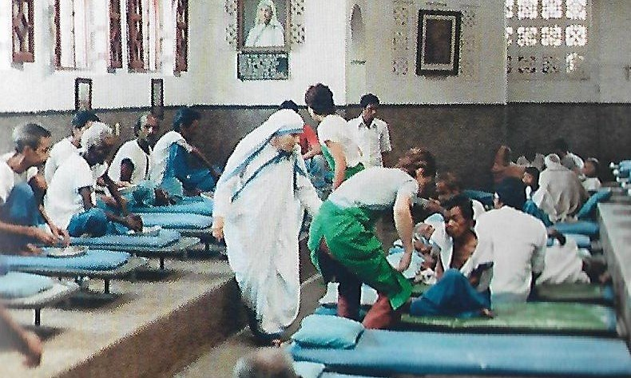
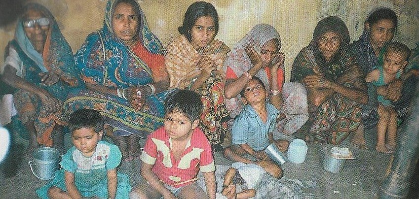
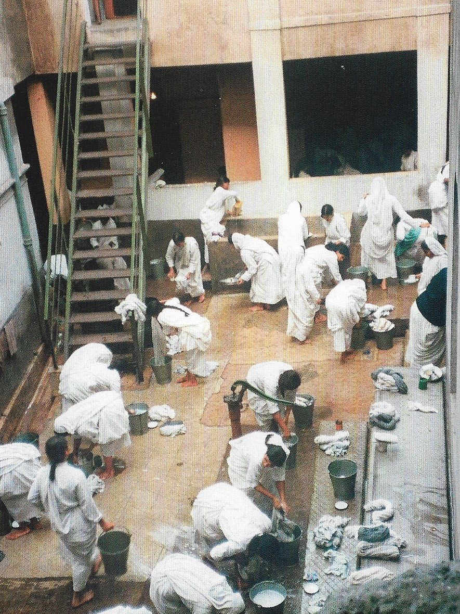

"FOTOGRAFIAS"
Calcutá - Índia

Bispo Pavol Hnilica, Madre Teresa e Irmã Mala Provincial na Russia
Igreja Apostólica Armênia com Madre Teresa e Religiosos (Russia)

Madre Teresa no Lar dos Moribundos em Kalighat (Índia)

Pobres esperam em frente a Casa-Mãe das Missionárias em Calcutá (Índia)
Papa João Paulo II, Madre Teresa, Irmã Mala, Padre Leo e senhora Jeanette Petrie

Irmãs Missionárias lavando o Sari e outras roupas.
CONVITE
Este Site foi construído pelo Apostolado dos Sagrados Corações. Clique aqui ou no endereço abaixo para visitar o nosso PORTAL. Nele encontrará uma apreciável quantidade de Sites sobre o CRIADOR, o ESPÍRITO SANTO, JESUS DE NAZARÉ, sobre NOSSA SENHORA, os SANTOS ANJOS e Sites que apresentam a Vida e Obra de diversos SANTOS. Todos eles elaborados com muito amor e dedicação, fundamentados na Sagrada Escritura, na Tradição Cristã, na Vida e Obra dos Santos e nas Manifestações Sobrenaturais, com a intenção de somente informar a Verdade.
http://www.apostoladosagradoscoracoes.com.br/
Desejando comunicar-se utilize o E-mail abaixo:
contato@apostoladosagradoscoracoes.com.br
contato@apostoladosagradoscoracoes.com.br
FIRMAS QUE DIVULGAM
O SITE